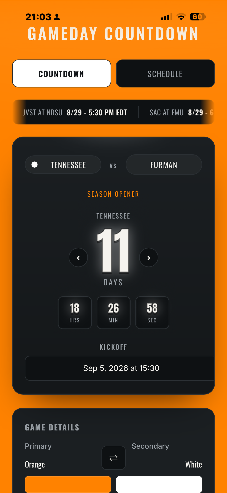
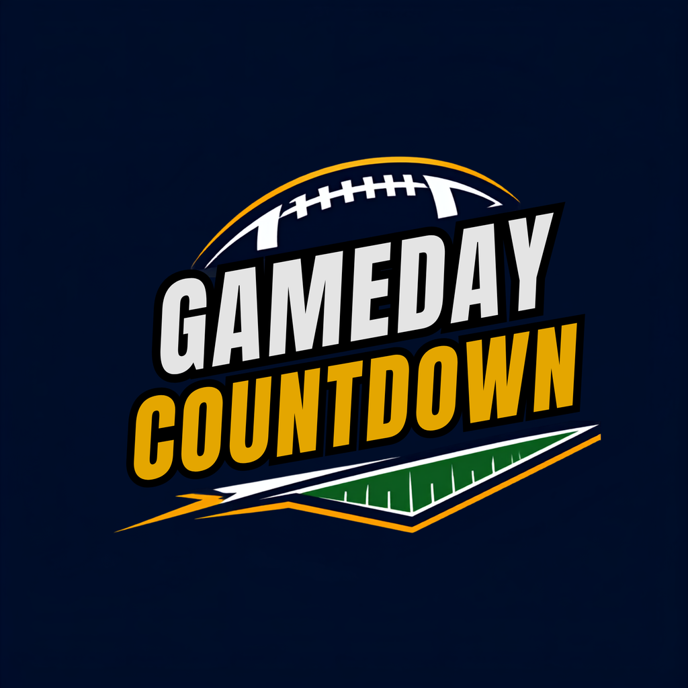
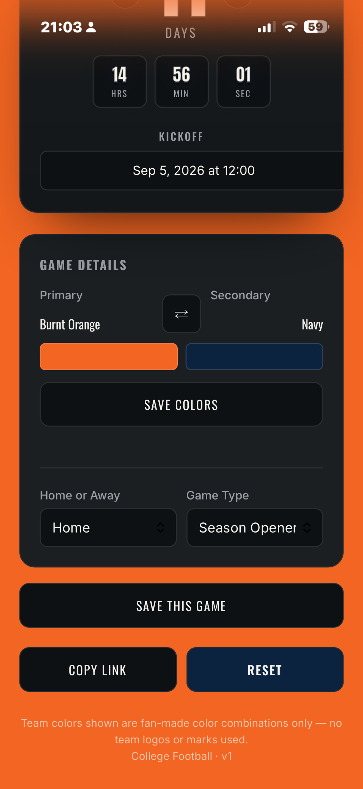
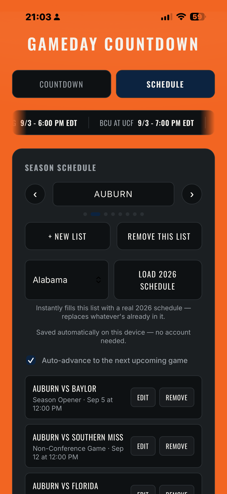
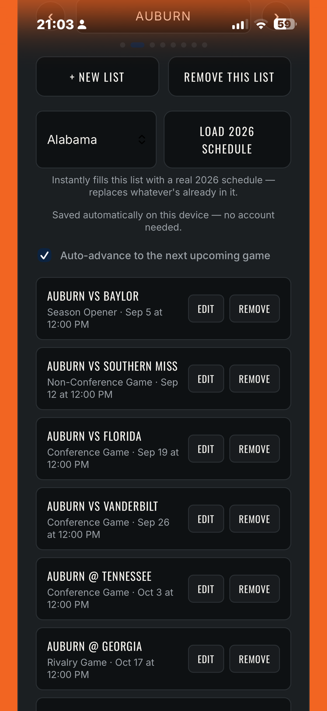
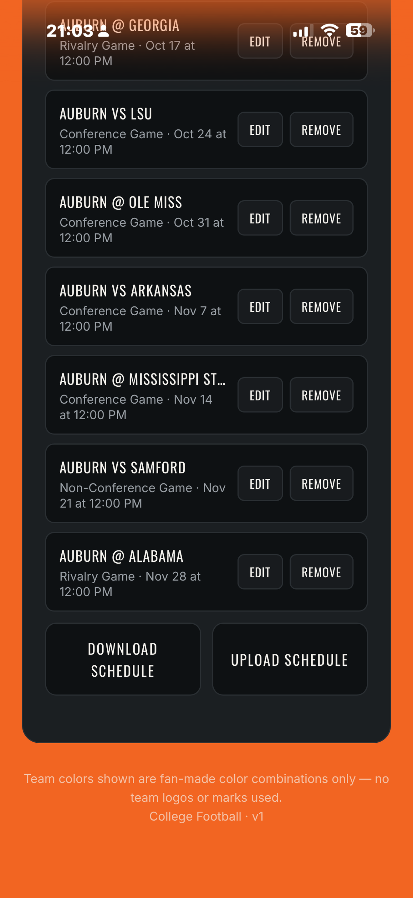

Gameday Countdown
Gameday Countdown turns any college football matchup into a live, team-colored scoreboard. Pick your team and its colors, set the opponent, home or away, and kickoff time, and watch the countdown run down to the second. Build out an entire season as its own schedule, keep a separate one for every team you follow, and let the countdown automatically move to the next game as each one passes.
See it in action
A look inside the actual app, from the live scoreboard to building out a full season.




Team Colors, Every Team
Choose from a full lineup of college football teams, each with its own primary and secondary colors. Flip which color leads with one tap, and save it so it's exactly how you like it every time you come back.
A Schedule for Every Team
Keep more than one team's season going at once. Each schedule holds its own list of games, swipeable like a deck, so following two or three teams never means losing track of any of them.
Live, Down to the Second
Every countdown updates in real time: days, hours, minutes, and seconds, so you always know exactly how close kickoff is.
Always On the Next Game
Once a game's kickoff passes, the countdown moves itself to the next game on that team's schedule automatically. No resetting it every week.
Built for Every Matchup
Home or away, season opener, rivalry game, conference matchup, bowl game, or championship. Tag every game with what it actually is, not just a date on a calendar.
Live Scores, Right on Screen
A running scores ticker keeps today's college football scoreboard moving across the screen, so gameday doesn't stop at your own team's countdown.
Your Data, Your Device
Gameday Countdown works completely offline. Every schedule lives right on your device. No accounts, no tracking. Back up any schedule anytime with one tap.
Setting Up a New Team's Schedule
A season takes a few minutes to build, and it only gets faster from there.
Note: if you skip step 1 and just start adding games, they'll land in whichever schedule is already active, so creating the new list first is what keeps this team separate from your others.
Don't See Your Team?
Gameday Countdown comes preloaded with real 2026 schedules for 32 major programs, the AP Top 25 and the full SEC. Tap Load 2026 Schedule on the Schedule tab and yours might already be one tap away.
If your team isn't in the list yet, let us know and we'll add it.
Request Your TeamWhat's Next
This is just the start of the season. Future updates will bring kickoff time corrections as networks finalize them, full playoff and bowl schedules, and next year's slate the moment it's ready, all free for anyone who already has the app.
How To…
Edit a saved game
Schedule tab, find the game in the list, tap Edit. It jumps you to the Countdown tab with that game's details loaded. Change anything, then tap Save Changes to update it in place, or Cancel to back out.
Switch between schedules
Use the arrow buttons next to the big Days number, or swipe left and right anywhere on the scoreboard. The same arrows also appear at the top of the Season Schedule panel on the Schedule tab.
Remove a schedule
Schedule tab, switch to the schedule you want to remove, tap Remove This List. You'll be asked to confirm, since this deletes every game saved in it. Disabled if it's your only schedule.
Remove a single game
Schedule tab, find the game in the list, tap Remove.
Turn auto-advance on or off
Schedule tab, the "Auto-advance to the next upcoming game" checkbox. When it's on, the countdown always shows whichever saved game is soonest and moves itself forward once a game passes. Turn it off to browse and hold on one game manually.
Change a team's colors for good
Tap the swap arrow next to the color swatches to preview the flip, then tap Save Colors. This updates the default for that team going forward and updates every game you've already saved for that team, so the change actually sticks everywhere.
Back up or move a schedule to another device
Schedule tab, Download Schedule saves the active schedule as a file. On another device, tap Upload Schedule and pick that file. It replaces whatever schedule is currently active there, so switch to (or create) the right list first.
Share the game on screen
Countdown tab, Copy Link. This copies a web address with that exact matchup baked in: team, colors, opponent, and kickoff time, so whoever opens it sees the same countdown you do.
Add a non-conference or out-of-list opponent
The opponent field on the Countdown tab is a plain text box. Just type any name, it doesn't have to be one of the teams in the dropdown.
Apps from On the Hunt for Fun!
On the Hunt for Fun! is a travel YouTube channel. These apps grew out of the same restlessness: a training log, a countdown that felt fun to look at, a map I could share with the people I travel with. Happy to hear what you think.